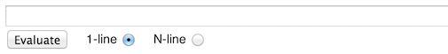

A text field, with an Evaluate button, appears in several screens in Observatory’s UI. It looks like the following:

When you see this text field, you can enter
a Dart expression to be evaluated in the running application
in real time. You can query the app, or you can modify it.
Even if an application has exited, you can use this text field
to start it again if you have specified the --pause-isolates-on-exit option
when starting Observatory.
(To see how to restart an app, see Example 1.)
You can enter any valid expression into the text field. The Dart Language specification has a section on what constitutes a valid expression. If the expression is not valid, an error message displays.
The scope of the evaluation depends on where you are in Observatory’s UI:
While the scope is different in these situations, the process of evaluation is the same.
You can restart an application by entering main()
into the expression evaluation field in either the root
isolate screen,
or the library screen.
If the main method requires any arguments, enter those as well.
The main method of the following example accepts an optional argument to
determine how many times it should print the “Hello World” string.
The default is one time.
void main(List<String> args) {
var num;
if (args.length==0) num = 1;
else num=int.parse(args[0]);
for (int i = 0;i < num; i++) {
print("Hello, World!");
}
print("That's all!\n");
}
Launch the app and open Observatory.
The following output prints to the console when main(['3']), followed by
main(['5']), is entered into the isolate’s expression evaluation field:
Observatory listening on http://127.0.0.1:61852 Hello, World! That's all! Isolate helloworld.dart$main-316431991 paused before exiting. Use Observatory to release it. Hello, World! Hello, World! Hello, World! That's all! Hello, World! Hello, World! Hello, World! Hello, World! Hello, World! That's all!
You can use the expression evaluation field to examine and set the value of variables in real time.
The following sample program defines several top-level variables:
String str="Howdy!";
double db, db2;
List aList=[1, 2, 3];
void main() {
// ...
}
Launch the app and open Observatory.
The library screen shows the following:
variables (4)
static String str "Howdy!"
static double db null
static double db2 null
static List aList _GrowableList(3)
Use the expression evaluation field to modify the variables. Some examples are:
str = "Hola!" db = 10.3 db2 = db aList.add(15)
While the variable values have changed, note that the variable summary does not refresh (issue 18856). Click the variable name to see the updated value.
With a little planning, you can use the evaluate expression field to write brand new code that immediately executes. For example, you can use this feature to print logging information.
This technique requires some minimal setup in your code. You must:
A closure is a function object. To learn more, read Lexical Closures.
The following example defines a closure variable named closureFoo.
The code then iterates in an endless loop, increasing the value of a top-level
counter variable.
var closureFoo;
int counter = 0;
void main() {
while (true) {
if (closureFoo != null) {
closureFoo();
}
counter++;
}
}
Launch the app and open Observatory.
Enter closure code into the expression evaluation field in either the root isolate screen screen, or the library screen.
The following example defines the closureFoo function to print
the value of the counter:
closureFoo = (){print(counter);}
As soon as the expression is evaluated, the output prints to the console:
13903954684 13903954685 13903954686 13903954687 13903954688 13903954689 13903954690
You can change the definition of closureFoo. For example, the following
code prints only even counter values:
closureFoo=() {if (counter.isEven) { print(counter); } }
The output changes immediately:
115296439424 115296439426 115296439428 115296439430 115296439432 115296439434 115296439436
To disable the closure code, reset the closure variable to null in the expression evaluation field:
closureFoo = null
The output immediately stops.